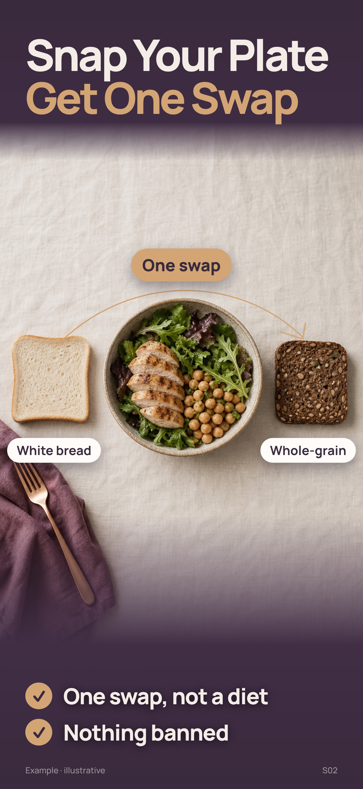
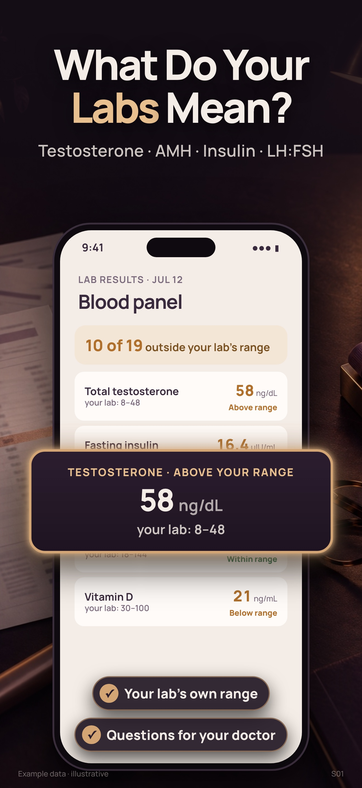
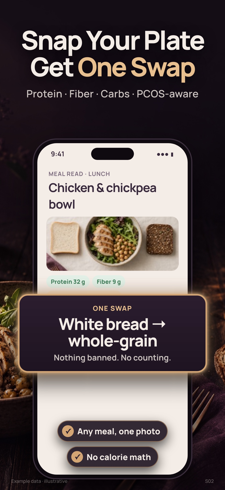
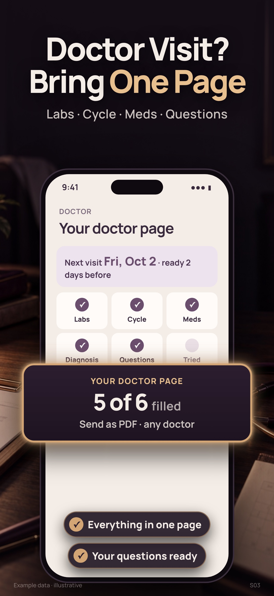
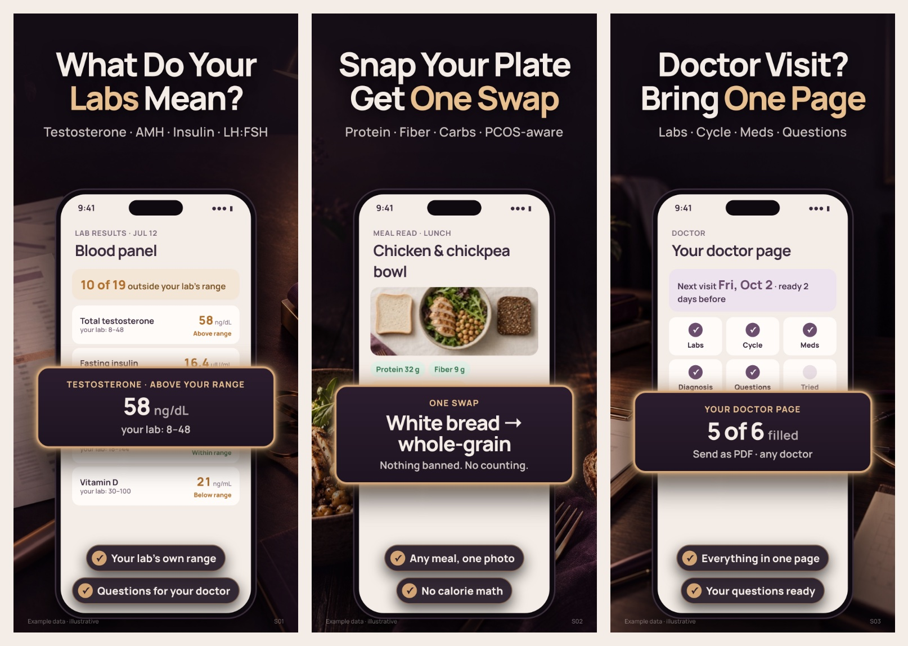
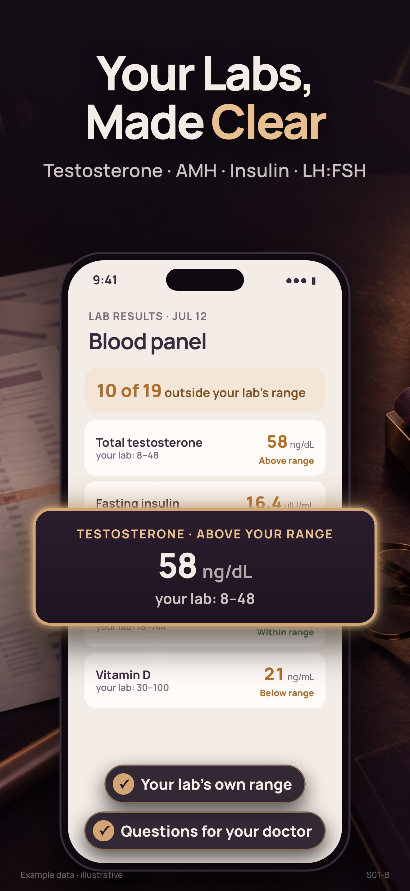

Cysta AI — выбор скриншотов App Store
Архив r4 · Fable 4–8/10 → заменён r5Все изображения открываются в полном размере 1320 × 2868 по нажатию. Для комментария достаточно номера: «S02 — фон оставить, заголовок на …».
Что предлагаю утвердить
Формула WatchSnap / SnapFlip — наших приложений, которые скачивают: вопрос или обещание крупно по центру → строка PCOS-слов → тёмная кинематографичная сцена с предметом → телефон с её результатом → одна светящаяся цифра → две галочки. Порядок: анализы → еда → врач. Фоны — новые генерации GPT Image 2.5 (~$0.04 за кадр); текст и интерфейс — HTML, поэтому локализация без новых генераций.
Первые три: было / стало
Сверху r3 (отклонён), снизу r4. Jev сравнивал их как превью в поиске (24 человека × 2 прохода с обратным порядком).
| Первый · анализы | Второй · еда | Третий · врач | |
|---|---|---|---|
| r3 светлый натюрморт |
 |
 |
 |
| r4 формула WatchSnap |
 |
 |
 |
| Jev: r4 / r3 | 0.77 / 0.23 | 0.89 / 0.11 | 0.58 / 0.42 неустойчиво: 0.31 / 0.85 |
Серия r4 целиком

Зачем нужен каждый кадр
| Кадр и текст | Аудитория и JTBD | Почему так | Роль в воронке | Слабое место / что проверить |
|---|---|---|---|---|
| S01 · What Do Your Labs Mean? Testosterone · AMH · Insulin · LH:FSH | Naomi, Anna, из поиска: «не знаю, что значат мои цифры» — боль №1 (2.70) | Строка анализов — главный сигнал «это про PCOS» (Jev 0.63). Светится одно её число против диапазона её бланка (58 при 8–48) | Первый кадр: анализы выбирают первыми 0.49 (врач 0.31, еда 0.20) | Заголовок: «Your Labs, Made Clear» 0.47 против вопроса 0.38 — см. варианты. Цифры из тестового бланка приложения |
| S02 · Snap Your Plate / Get One Swap Protein · Fiber · Carbs · PCOS-aware | Wendy, Naomi: «не знаю, что есть, советы противоречат» — боль №2 | Действие + результат (0.71 в r3). Одна замена крупно, «Nothing banned» снимает вину | Ежедневная польза — повод открыть приложение завтра | Белый хлеб не должен читаться как запрет. Проверить стрелку «→» в превью |
| S03 · Doctor Visit? Bring One Page Labs · Cycle · Meds · Questions | Anna, Maya, Tanya: «врачи отмахиваются, 10 минут на приём» — главный платёжный мотив (0.20) | Короткое обещание (0.66 в r3). Светится «5 of 6 filled» — страница почти готова | Причина платить и продлевать: визит с готовой страницей | Jev r4/r3 неустойчив (0.31 / 0.85) — формат для этого кадра не доказан |
Варианты первого кадра
Фон, телефон и цифра одинаковые — выбираем только заголовок.

«PCOS Labs, Explained» — 0.15. Разница A/B небольшая: оба можно запустить через Product Page Optimization в App Store.
Что показали Jev и Fable
| Проверка | Результат | Что из этого следует |
|---|---|---|
| Модели генерации (одна сцена) | GPT Image 2 high $0.18 · GPT Image 2.5 $0.04–0.05 · Gemini 3 Pro $0.14 — все дают фото уровня Hepatica; Seedream отказал модерацией | Качество упиралось не в модель, а в композицию. Ждать Codex не нужно; основная модель — GPT Image 2.5 |
| Что сразу говорит «это про PCOS» (Jev r4) | строка «Testosterone · AMH · Insulin · LH:FSH» 0.63 · светящаяся цифра 0.28 · фон 0.06 · заголовок 0.04 | Ассоциацию даёт язык PCOS-анализов, а не картинка. Анатомия не нужна |
| r3 → r4 по превью (Jev) | анализы 0.77 · еда 0.89 · врач 0.58 (неустойчиво) | Формула работает для первых двух; врача дорабатываем |
| Визуальная оценка Fable | идёт — добавлю баллы 1–10 и топ-5 правок |
Данные: research/screenshots-r4-jev-2026-09-19/ и research/screenshots-r3-jev-2026-09-19/ в репозитории CystaAI. Jev — синтетические люди и текстовые описания кадров; окончательное слово — ваш глаз.
Боли → кадры
| # | Боль словами пользователя | Сила | Заплатит | Кадр |
|---|---|---|---|---|
| 1 | «Не знаю, какие анализы сдавать и что значат результаты» | 2.70 | 0.19 | S01 · первый |
| 2 | «Не знаю, что есть; советы противоречат друг другу» | 2.45 | 0.18 | S02 · второй |
| 6 | «Врачи отмахиваются: просто похудей» | 2.39 | 0.20* | S03 · третий |
| 3 | «Работает ли то, что я принимаю?» | 2.67 | 0.10 | S04 |
| 4 | «Цикл нерегулярный, приложения выдумывают даты» | 2.58 | 0.11 | S05 |
| 5 | «Страшно, я одна с этим» | 2.74 | 0.04 | S06 · Ask |
Jev, 24 × 2 (research/positioning-pains-jev-2026-09-18). * После появления страницы врача — главный платёжный мотив. Кадры 4–8 — после утверждения первых трёх.
Как прислать решения
Формат: r4 (WatchSnap) / доработать / другой Первый кадр: A (What Do Your Labs Mean?) / B (Your Labs, Made Clear) S02: оставить / изменить: … S03: оставить / изменить: … Порядок: S01 → S02 → S03 / свой Общее (фон, телефон, светящаяся цифра, галочки): …
Ревизии
| Ревизия | Что было | Решение владельца | Открыть |
|---|---|---|---|
| r4 · текущая | Формула WatchSnap: тёмный фон с предметом, заголовок по центру, PCOS-слова, телефон, светящаяся цифра | на ревью | эта страница |
| r3 | Светлый натюрморт, один предмет, 2 буллета | «Сделано плохо», не уровень Hepatica / Refluxora | archive/r3 |
| r2 | Фото онбординга + плотная карточка с цифрами | «Мало аффинитивности, мелко, перегружено» | archive/r2 |
| r1 | Первая сборка по брифу и спринту V2 | — | archive/r1 |